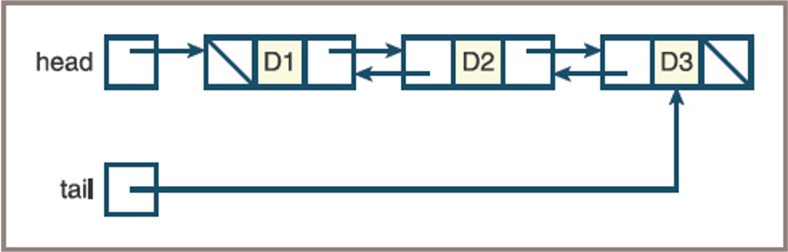

2025-09-24
if head is None or index <= 0:
head = Node(newItem, head)
else:
# Search for node at position index - 1 or the last position
probe = head
while index > 1 and probe.next != None:
probe = probe.next
index -= 1
# Insert new node after node at position index - 1
# or last position
probe.next = Node(newItem, probe.next)# Assumes that the linked structure has at least one item
if index <= 0 or head.next is None:
removedItem = head.data
head = head.next
return removedItem
else:
# Search for node at position index - 1 or
# the next to last position
probe = head
while index > 1 and probe.next.next != None:
probe = probe.next
index -= 1
removedItem = probe.next.data
probe.next = probe.next.next
return removedItem| Operation | Running Time |
|---|---|
| Access (by position) | O(n) |
| Search (by value) | O(n) |
| Insertion at beginning | O(1) |
| Insertion at end | O(n) |
| Insertion at position i | O(n) |
| Removal at beginning | O(1) |
| Removal at end | O(n) |
| Removal at position i | O(n) |
class Node:
def __init__(self, data=None, next=None):
self.data = data
self.next = next
class CircularLinkedList:
def __init__(self):
# Create a dummy header node that points to itself
self.header = Node()
self.header.next = self.header
self.tail = self.header
def insert(self, data):
# Insert new node at the end (before header)
new_node = Node(data, self.header)
probe = self.header
while probe.next != self.header:
probe = probe.next
probe.next = new_node
self.tail = new_node
def remove(self, data):
# Remove first node with matching data
probe = self.header
while probe.next != self.header and probe.next.data != data:
probe = probe.next
if probe.next != self.header:
to_remove = probe.next
probe.next = to_remove.next
# If removing the tail, update tail
if to_remove == self.tail:
if probe == self.header:
# List is now empty
self.tail = self.header
else:
self.tail = probe
def print_last(self):
if self.tail == self.header:
print("List is empty")
else:
print(self.tail.data)
clist = CircularLinkedList()
clist.insert(10)
clist.insert(20)
clist.insert(30)
clist.insert(50)
clist.insert(60)
clist.remove(60)
clist.print_last()## Search for node at position index - 1 or the last position
probe = head
while index > 0 and probe.next != head:
probe = probe.next
index -= 1
# Insert new node after node at position index - 1 or
# last position
probe.next = Node(newItem, probe.next)
Note the presence of two pointers, conventionally known as next and previous, in each node
Note also the presence of a second external tail pointer that allows direct access to the last node in the structure
class Node(object):
def __init__(self, data, next = None):
"""Instantiates a Node with default next of None"""
self.data = data
self.next = next
class TwoWayNode(Node):
def __init__(self, data, previous = None, next = None):
"""Instantiates a TwoWayNode."""
Node.__init__(self, data, next)
self.previous = previous